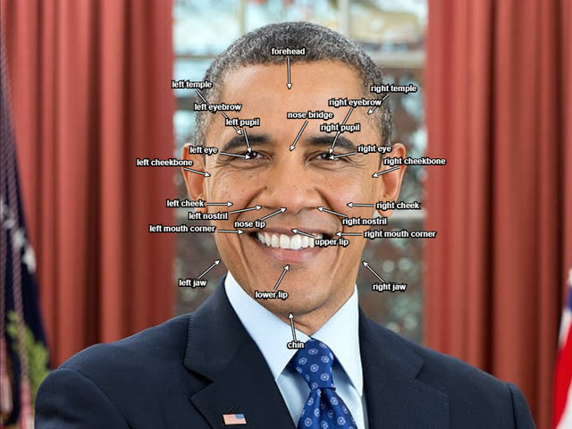
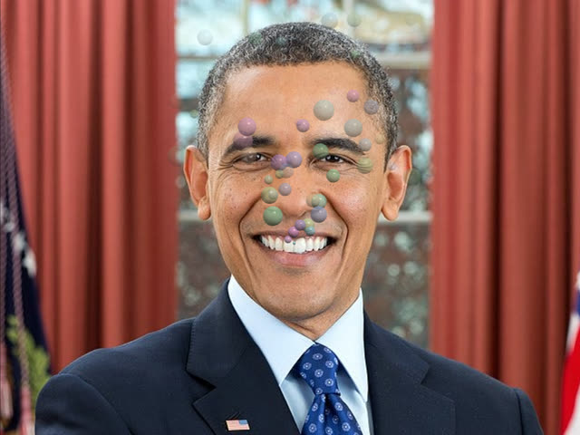
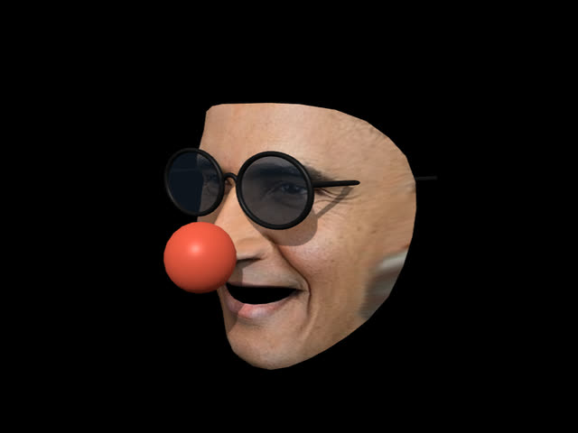
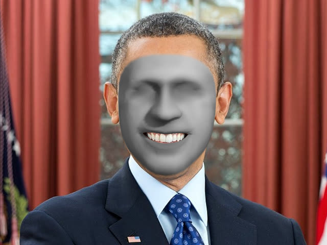
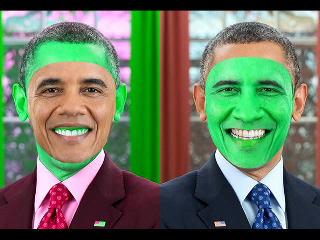
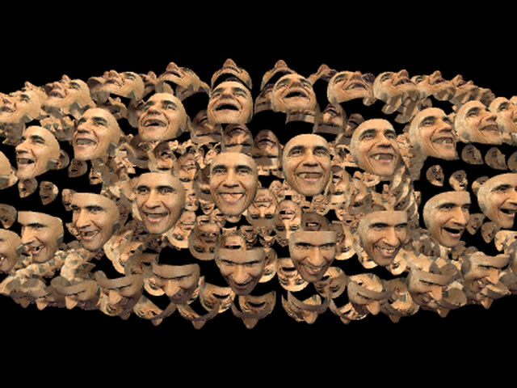

FaceMeshFaceGeometry
A three.js BufferGeometry for the face mesh from
MediaPipe's Face Landmarker.
Feed it the 468 landmarks of a face and get a mesh with texture coordinates and normals that
lines up with the video. Add the head pose, expression scores and irises when you need them.
What it does
A mesh that sits on the video
Landmarks become vertices in video pixels, for an orthographic camera, with normals recomputed every frame and the mesh mirrored for selfie cameras.
Texture coordinates
A fixed UV layout for masks and makeup, or coordinates that sample the video itself, to lift the face out of the frame.
Head pose, in centimeters
Metric mode builds the mesh in real-world units for a perspective camera, with the head's transform to attach glasses, hats or anything else.
Expressions and eyes
Scores for 51 expressions by name, like jawOpen or eyeBlinkLeft, and the position and size of both irises.
Points on the surface
track() returns a position, normal and rotation on any triangle of the face, to pin objects to it.
A camera that just works
<gum-av> handles permissions, front and back cameras on phones, broken virtual cameras and apps taking the camera away.
Quick start
// npm install face-mesh-face-geometry three
import { FaceMeshFaceGeometry } from "face-mesh-face-geometry";
const faceGeometry = new FaceMeshFaceGeometry();
scene.add(new Mesh(faceGeometry, new MeshNormalMaterial()));
// Every frame, with a MediaPipe FaceLandmarker in VIDEO mode:
faceGeometry.setSize(video.videoWidth, video.videoHeight);
const result = landmarker.detectForVideo(video, performance.now());
faceGeometry.updateFromResult(result, { flipped: true });
face.js imports three by name, so use an import map or a bundler.
The README covers the
camera setup, metric mode, blendshapes, irises and the full API.
Examples
They need a camera, and ask for permission when they open. Each has a settings panel in the top right.

Face landmarks
Labels follow 24 parts of the face, placed from the landmarks in video pixels and kept apart with a little 2D physics.
Glasses and head pose metric
Glasses and a clown nose follow the head in perspective, hidden behind the head where they should be. Optionally over a textured mask.

Expressions blendshapes
Every blendshape plotted live in the panel. Open your mouth to blow bubbles, and pucker for bigger ones.
Eye gaze metric
Arrows show where each eye is looking, from the irises and the head pose, with the surface direction of the forehead, nose, cheeks and chin.

Video-textured face metric
The face cut out of the webcam image and lit as a 3D object, wearing glasses and a clown nose. Drag to look at your own face from the side.

Face transfer
A face from a photo mapped onto yours. Pick one in the panel, or drop your own image on the page.

Face swap
With two people in view, each one wears the other's face.

Instanced faces
One video-textured face, drawn 500 times as an instanced mesh. Drag to orbit.